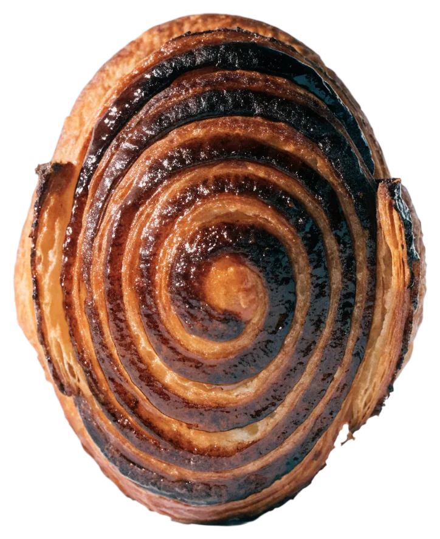
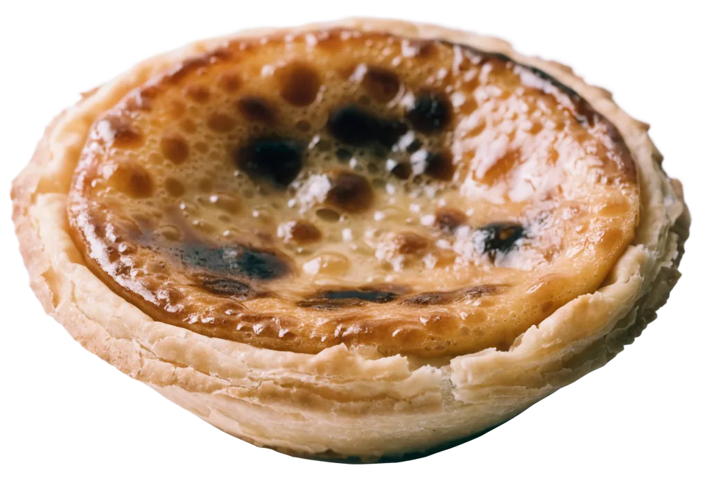
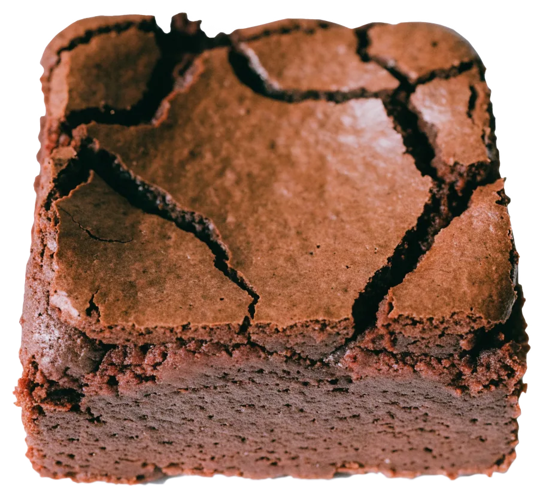

Franzbrötchen
Plunderteig mit Zimt und Zucker, ab 8 Uhr in der Vitrine.



Täglich 8–18 Uhr
Frühstück, Kuchen und eine Tassenlänge Pause.
Bäckerei und Café am Horner Weg 68 in Hamburg: Frühstück, Gebäck, Kuchen und Snacks, jeden Tag 8–18 Uhr, mit großer Terrasse.
Route zum Horner Weg 4,6900 Bewertungen auf GoogleMorgens das Frühstücksbrett mit Lachs, Schinken, Käse, Honig und Marmelade, mittags der Mittagstisch, auch vegetarisch. Dazwischen Gebäck und Kuchen aus der Bäckerei-Theke, zum Hierbleiben oder zum Mitnehmen.
Terrasse, Theke, Tisch: so sieht es am Horner Weg aus, wenn die Brötchen auf dem Tisch stehen.


Franzbrötchen, Natas und Brownies liegen ab 8 Uhr in der Vitrine, daneben Pistazien-Cheesecake und Erdbeertorte. Alles auch zum Mitnehmen.
Plunderteig mit Zimt und Zucker, ab 8 Uhr in der Vitrine.

Portugiesisches Puddingtörtchen mit knuspriger Schale.

Schokoladenkuchen im Stück, zum Kaffee oder für unterwegs.
Frühstück
Gebäck & Kuchen
Getränke
Mittagstisch und vegetarische Gerichte wechseln. Was es heute gibt, steht im Café auf der Tafel.
Frische Brötchen am besten am Vormittag.
Die Terrasse mit der cremefarbenen Markise liegt direkt am Gehweg unter den Bäumen; der Eingang zur Bäckerei ist gleich daneben.
Schritt 1 von 3
Frühstück auf der Terrasse oder drinnen in der Sitzecke? Tag, Uhrzeit und Personen wählen, wir melden uns zur Bestätigung.
4,6900 Bewertungen auf Google Foto: Hanse Freddy · Google Maps
Foto: Hanse Freddy · Google MapsTäglich 8–18 Uhr
Horner Weg 68, jeden Tag ab 8 Uhr.